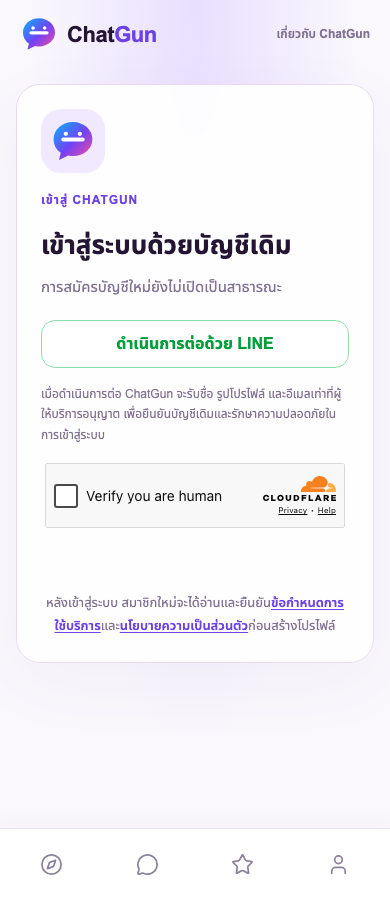
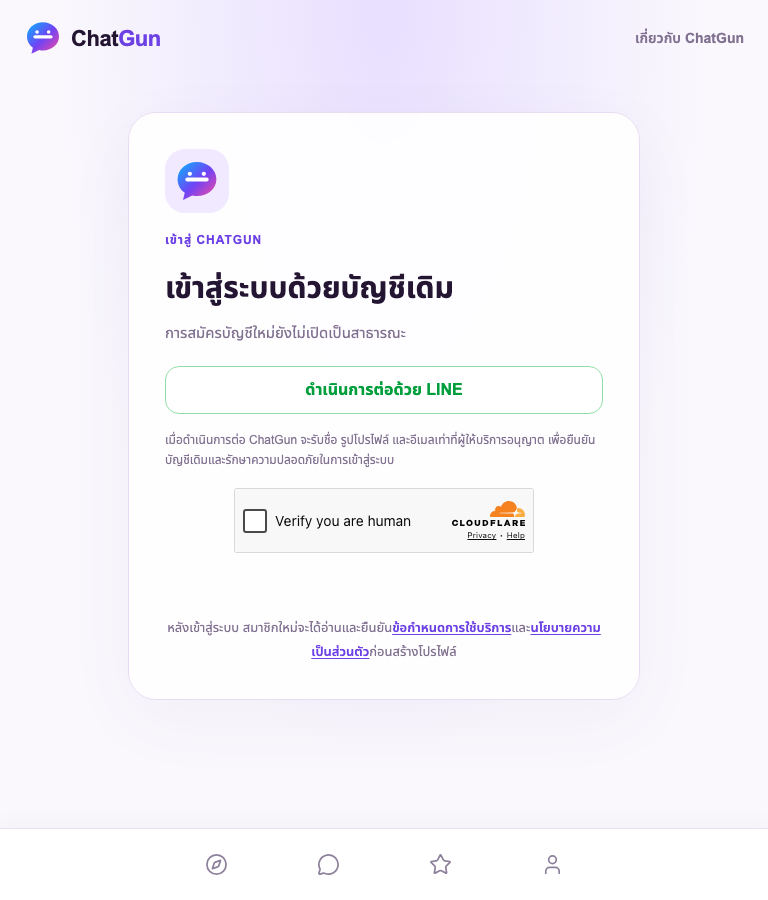
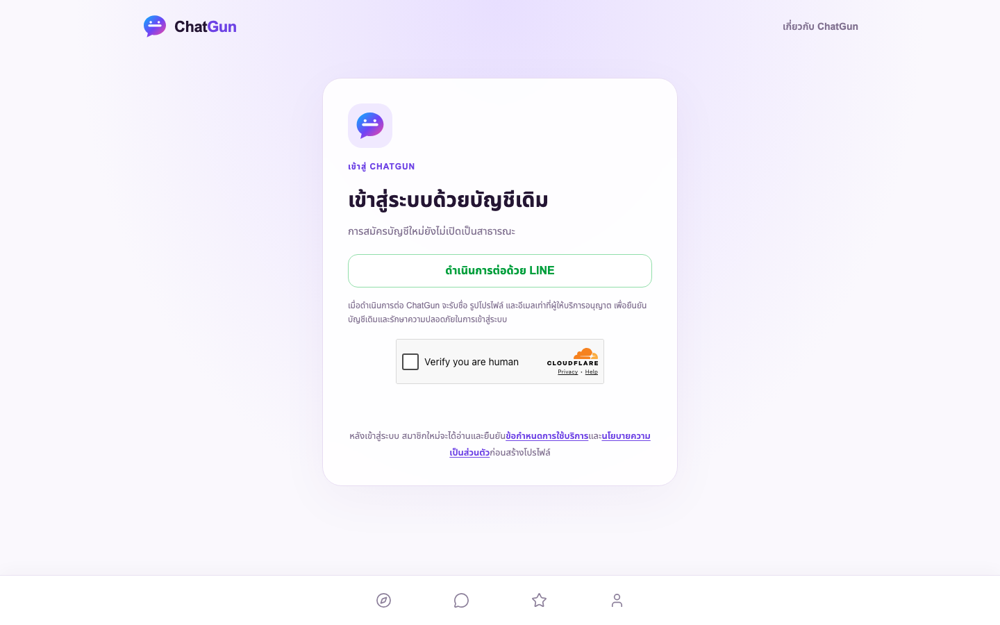

Deploy แล้ว · Owner-only Production UAT
ตามคำสั่งเจ้าของให้ขึ้น Production แล้วทดสอบที่นั่น เปลี่ยนลำดับ UAT โดยชัดเจน ไม่ใช่การบันทึกผล genuine UAT เป็น PASS ล่วงหน้า และไม่ใช่เปิด Social/public launch
https://chatgun.social/
Actual live SHA a73ff21c615dabb6a0c19c0a22685c2370958ca1
Deployment f705d7cd-974d-4e48-8b61-73ec1a760c42
ตรวจแล้วหลัง deploy
- CI บน exact application SHA ผ่าน: 202 unit/integration/security tests และ browser regression ทั้งสามชุด
- Preview checks 14 ผ่าน, Production release checks 22 ผ่าน, asset hashes 39 ไฟล์ตรงรุ่น
- Production browser smoke 6 กรณีที่390/768/1440: root พาผู้ที่ยังไม่ login ไป signup, LINE-only controls หลังโหลด config, ไม่มี overflow/uncaught JavaScript errors/first-party500
- D1 schema17/FK0, บัญชีเจ้าของ1และ LINE identity1ยังอยู่, identity/user mismatches0
- Production/Preview bindings ถูกต้อง private R2 ยัง private, secret names preserved ไม่มีการเปิดเผย secret values
- สำรอง D1 ใหม่0700/0600 ทดสอบ restore ใน SQLite เก็บ recovery bookmark และแพ็กเกจ rollback SHAเดิมไว้นอก Git
ครั้งแรกของ browser driver รอ networkidle จนหมดเวลาเพราะ third-party challenge traffic ครั้งถัดไปอ่าน provider controls ก่อน async configuration เสร็จ รอบสุดท้ายแก้การรอให้ตรวจสถานะ LINE-only ที่พร้อมจริง ไม่ปิด Turnstile หรือซ่อน error ของแอป ไม่อ้างว่ารอบที่ไม่ผ่านนั้นเป็น PASS
คุณทดสอบต่อได้
- เปิด chatgun.social ใน Chrome ที่ใช้บัญชีเจ้าของเดิม หากระบบขอ login ให้ทำ Turnstile และ LINE ด้วยตนเอง ไม่ต้องใช้ invitation ใหม่
- ตรวจ Profile, Account/Privacy/Session controls และ Admin Dashboard ตามสิทธิ์เดิม การเปิด restricted queues อาจต้อง recent authentication ตามปกติ ไม่ได้ลบข้อกำหนดนี้
- ทดสอบ logout/login ซ้ำเมื่อพร้อม บันทึกผลที่พบเพื่อแก้รวม ไม่ลบบัญชีเจ้าของในการ UAT
ยังไม่ทดสอบ genuine OAuth/Session ในรุ่นนี้แทนเจ้าของ ไม่มีการคลิก CAPTCHA/ใส่รหัสผ่าน/MFA/consent หรือสร้างบัญชีจริงอัตโนมัติ
สิ่งที่คงปิดและข้อจำกัด
Public signup, Discovery, Chat, Presence, uploads, Sensitive, OTP, Game และ Demo ยังปิด ไม่มีผู้ใช้ปลอม ไม่มีคำเชิญใหม่ ไม่มีการเพิ่มหรือขยาย Admin grant เดิมซึ่งหมดอายุ27ต.ค.2026 11:01:45 Bangkok การทดสอบข้ามสมาชิก/สื่อ/อุทธรณ์ยังต้องมีผู้ร่วมทดสอบและขอบเขตการดูแลที่ใช้งานได้จริง ไม่ถือว่าคำอนุมัติสร้างผู้ทดสอบ/backup moderator/independent reviewer ขึ้นมาแล้ว ไม่อ้าง24/7
ภาพหน้า Production จริงหลัง deploy

390px · ไม่ใช่หลักฐาน authenticated UAT
768px · ไม่ใช่หลักฐาน authenticated UAT
1440px · ไม่ใช่หลักฐาน authenticated UATJSON summary · Release checks · Browser results · Protected backup metadata · Application CI